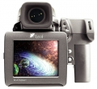

Aptus 22采用2200万像素尺寸为48×36mm的CCD传感器，搭载3.5英寸触摸式LCD，连拍速度为1.2fps。新型的无压缩CHDR文件格式在100%保留原始数据的情况下，大幅度减少了文件大小，提高了拍摄、存储和传输的效率。
便宜实用的大底后背，低感细腻，颜色朴实。 工作好伙伴，某些设计略显落后。
性价比高，相比2800的小底和3300大底而言这个价钱很实惠。 颜色客观朴实，成像面积相对比较大。 低感很细腻
固件设计相对落后，处理速度比较慢。 配合MAMIYA645D II偶尔出现匹配bug。 最长曝光时间只支持到30s。 iso超过200基本没法用。 400火线相对落后，用电池状态十分耗电。 工作中那个触摸屏很让人上火。 像素单元原因配合大画幅镜头很尴尬。